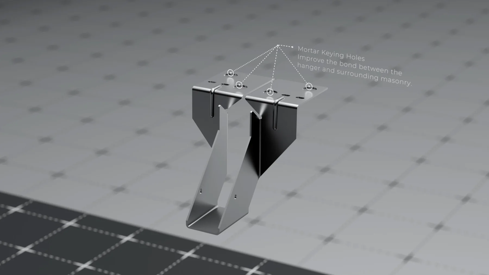
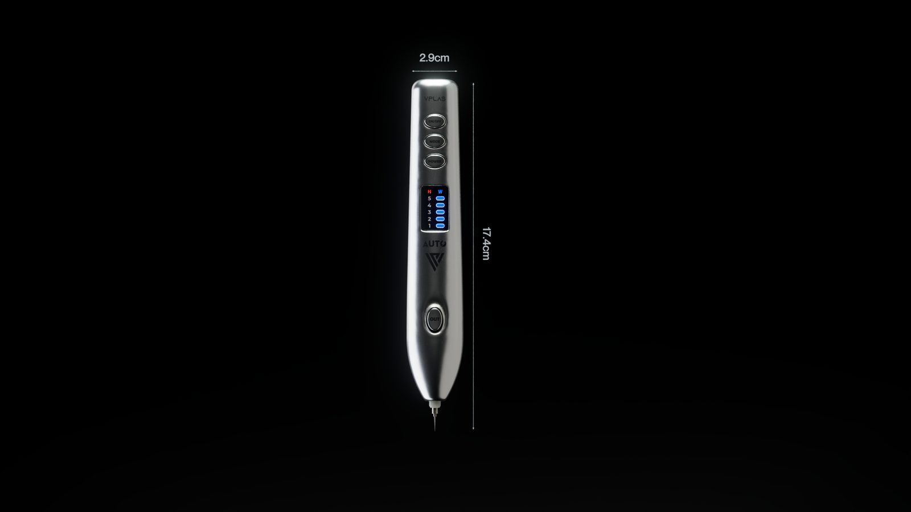
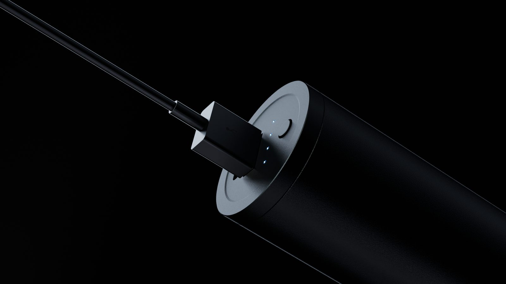

Blog
Ghi chép từ
bàn làm việc
Những thứ tôi rút ra khi làm job thật và khi sửa bài cho học viên. Không có bài nào ở đây là lý thuyết chép lại, nếu tôi chưa từng vấp phải nó, tôi không viết.

Học phí khoá học Blender: tính sao cho đúng
Học phí khoá học Blender chênh nhau rất xa. Cách quy mọi báo giá về đơn giá mỗi lần được chữa bài, bốn khoản nằm ngoài hoá đơn và câu hỏi lọc lớp kém.

Tự học Blender hay học kèm 3D? So sánh thẳng thắn
Tự học Blender miễn phí và nhiều người thành công. Vậy học kèm 3D Blender đáng tiền khi nào, lãng phí khi nào? Phân tích thẳng từ người đang dạy.
Khoá học 3D tại TPHCM: chọn offline hay online
Khoá học 3D tại TPHCM học trực tiếp có thật sự hơn học online? So sánh thời gian đi lại, tốc độ sửa bài, học phí và cách kiểm tra một lớp trước khi đóng tiền.

Khoá học modeling 3D: học gì, theo thứ tự nào
Khoá học modeling 3D nên dạy gì, học theo thứ tự nào, và sáu dấu hiệu nhận ra một khoá dựng hình sản phẩm làm được việc thay vì chỉ dạy nút bấm.
Khoá học render: nên dạy gì và học bao lâu là đủ
Khoá học render nên dạy gì ngoài nút bấm, nên học Cycles hay Eevee trước, học phí gồm khoản nào và năm dấu hiệu nhận ra một khoá chỉ dạy thao tác.

Khoá học 3D Blender: chọn hệ nào, học ở đâu, tốn gì
Khoá học 3D Blender có mấy loại, nên học online hay tại TPHCM, học phí gồm những khoản nào, và ba bài hướng dẫn chi tiết cho từng nhóm người học.
Khoá học Blender 3D cho người mới nên có những gì
Khoá học Blender 3D cho người mới nên dạy gì trong tám tuần đầu, học online hay tại TPHCM, học phí gồm những khoản nào và sáu câu cần hỏi trước khi đóng tiền.

Khoá học Blender 3D ở Việt Nam: chọn sao cho đúng
Chọn khoá học Blender 3D ở Việt Nam: bốn loại khoá đang có, học phí gồm những khoản nào, bảy câu nên hỏi trước khi đóng tiền và quảng cáo nên bỏ qua.

Học kèm 1 kèm 1 Blender: khi nào đáng tiền
Học kèm 1 kèm 1 Blender đắt hơn lớp nhóm nhiều lần. Ai thật sự hợp, một buổi kèm tử tế diễn ra thế nào và cách thử người kèm trước khi trả tiền.

Học đồ hoạ 3D từ con số 0: ba tháng đầu nên làm gì
Kế hoạch ba tháng đầu cho người học đồ hoạ 3D bằng Blender: học gì trước, bỏ qua gì, luyện bao nhiêu mỗi tuần và dấu hiệu cho thấy bạn đi đúng hướng.

Cách render nhanh hơn trong Blender Cycles
Mười cách cắt thời gian render Cycles mà không làm hình xấu đi: noise threshold, denoise, bounce, volumetric, OptiX và những thứ không nên đụng vào.
Blender hay 3ds Max, C4D? So sánh cho người mới
So sánh Blender, 3ds Max, Cinema 4D và Maya theo mục tiêu nghề nghiệp tại Việt Nam, phần kỹ năng chuyển được giữa các phần mềm và cách chọn đỡ mất thời gian.

Lộ trình tự học Blender: 7 kỹ năng, đúng thứ tự
Phần lớn người mới bỏ Blender không vì khó, mà vì học sai thứ tự. Lộ trình tự học Blender gồm 7 kỹ năng, kèm lý do từng bước phải đứng đúng chỗ.

5 lỗi lighting khiến render của bạn trông rẻ tiền
Không phải do máy yếu hay thiếu plugin. Năm lỗi lighting dưới đây gặp ở gần như mọi bài tự học Blender, và cái nào cũng sửa được trong một buổi.

Quy trình một shot TVC 3D từ file Blender
Toàn bộ các bước một shot sản phẩm đi qua trong dự án thương mại, kể cả những khâu không ai quay video hướng dẫn: brief, duyệt, và sửa theo ý khách.
Kho hậu trường OVERGROWN của Blender Studio
Blender Studio mở miễn phí nhật ký sản xuất phim OVERGROWN: rigging, lông, shading, ánh sáng, nước, compositing. Đây là cách khai thác nó cho ra kỹ năng thật.
Add-on hard-surface Blender: nên cài những gì
Danh sách add-on hard-surface mà artist tại CD Projekt Red dùng, và đánh giá thẳng thắn cái nào thật sự cần khi bạn làm sản phẩm thương mại.
Sáu node và một hành lang: dựng không khí
Andrew Price dựng cảnh Backrooms gần như không model, không UV, chỉ sáu node. Phân tích vì sao cách làm này hiệu quả và khi nào nên áp dụng.
Học Blender 3D bao lâu thì nhận được job đầu tiên?
Mốc thời gian thực tế để đi từ mở Blender lần đầu tới lúc có khách trả tiền, chia theo từng giai đoạn, và điều gì quyết định bạn nhanh hay chậm.
Cấu hình máy học Blender 3D theo từng giai đoạn
Chọn cấu hình máy học Blender 3D theo từng giai đoạn: CPU, GPU, RAM, SSD, mốc nào nên nâng cấp, và lý do máy yếu thường không phải thứ cản bạn.